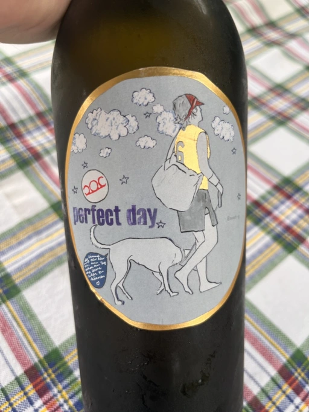

- Type
- White Still, Dry
- Producer
- Pittnauer
- Vintage
- 2021
- Location
- Austria, Landwein aus Österreich
- Grapes
- Grüner Veltliner, Sauvignon Blanc, Muscat Blanc, Muskateller
- Alcohol
- 12.5
- Sugar
- 1.3
- Price
- 705 UAH, 740 UAH
- Cellar
- N/A
Ratings
2022-08-13 - 7.25
I am not a fan of this wine. But I must admit that this vintage is so much better than my first encounter with this wine (I guess it was 2019, I don’t have notes). Less reductive, more friendly and approachable. Lychee, peach, lemon and flowers. The palate is simple. Just chill it and enjoy. Let’s leave QPR out of the equation, as it’s really questionable.
2022-10-27 - 5.50
Ah, the Perfect Day, the way I remember it. Fermented elderflower and defiled toiled in the middle of nowhere. Why do I have to suffer? Aside from this nuance, it’s pretty crowd-pleasing, tropical and quaffable. Just not my thing.
Related